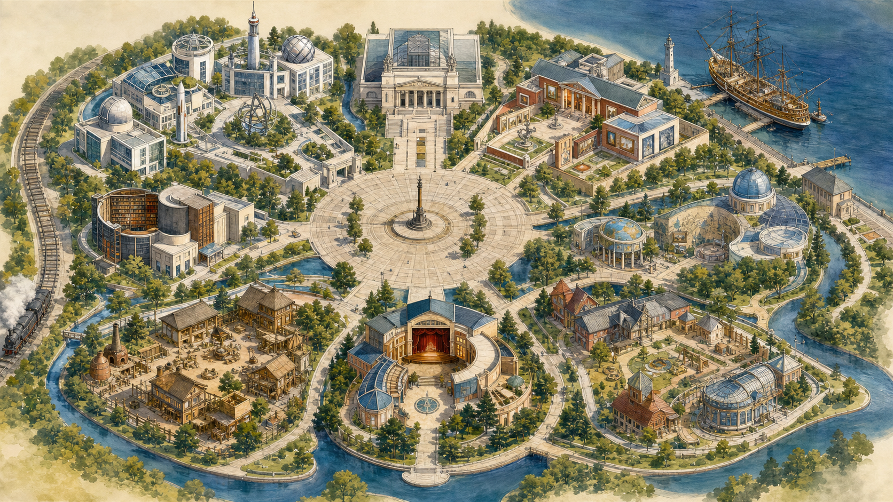

Маршрут 01 · 20 минут · 3 остановки
Три открытия, которые современники не заметили
Изобретение, картина и экспедиция показывают, почему важное не всегда признают сразу.
Пройти маршрут →60 музеев · 365 историй в каждом
Люди, вещи, картины и открытия соединяются здесь в один живой город — с маршрутами на пять минут и путешествиями на целый вечер.
Источники, авторство и дата проверки — у каждой истории.

Городская станция поиска
01
историяСегодня на центральной площади · 7 минут
Глеб Котельников увидел гибель лётчика — и понял, каким должен быть первый действительно переносной парашют.
Начать историю →Город строится маленькой командой
Можно рассказать о проекте, сообщить об ошибке или поддержать работу редакции рублём.
Живой атлас
Каждый район — свой способ смотреть на историю. Выбери на карте или воспользуйся равноправным списком.
Район О–01
От чертежа и сомнения — к вещам, которые изменили повседневную жизнь и представление о возможном.
8 музеев · 4 маршрута
Войти в район →Экскурсовод уже собрал путь
Короткий маршрут, глубокое исследование или совместное семейное путешествие.
Маршрут 01 · 20 минут · 3 остановки
Изобретение, картина и экспедиция показывают, почему важное не всегда признают сразу.
Пройти маршрут →5 минут
Один предмет, конфликт и вывод.
Начать →30 минут
Три драматургии Айвазовского.
Начать →Вместе
Смотреть, слушать и обсуждать.
Выбрать возраст →Все двери города
Фильтруй по району, времени и формату или свободно гуляй по полному указателю.
Загружаю указатель музеев…
Не легенда без подписи
Удивление работает только там, где ему можно доверять. Поэтому факт, версия и интерпретация обозначаются по-разному.
Редакционные принципы →Поддержать проект
Расскажи о музее, предложи уточнение или поддержи работу с источниками, изображениями, аудио и доступными экскурсиями.